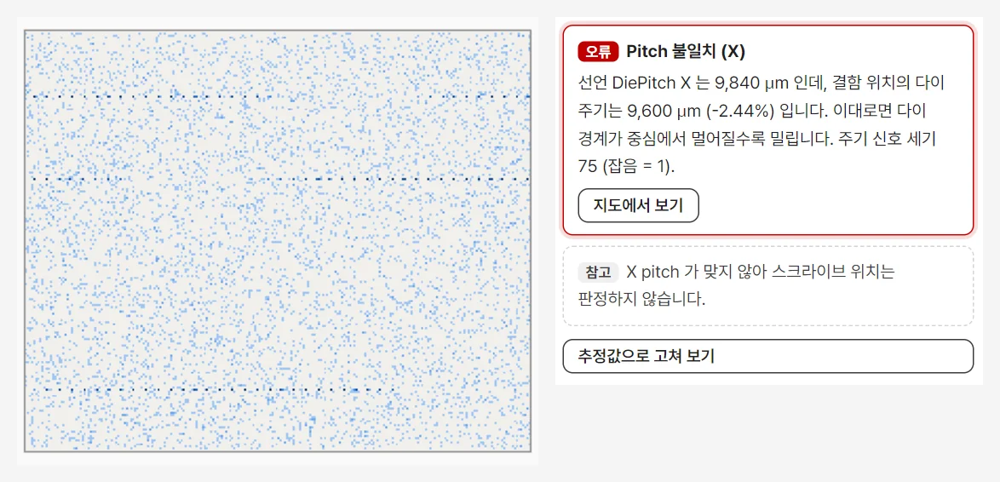
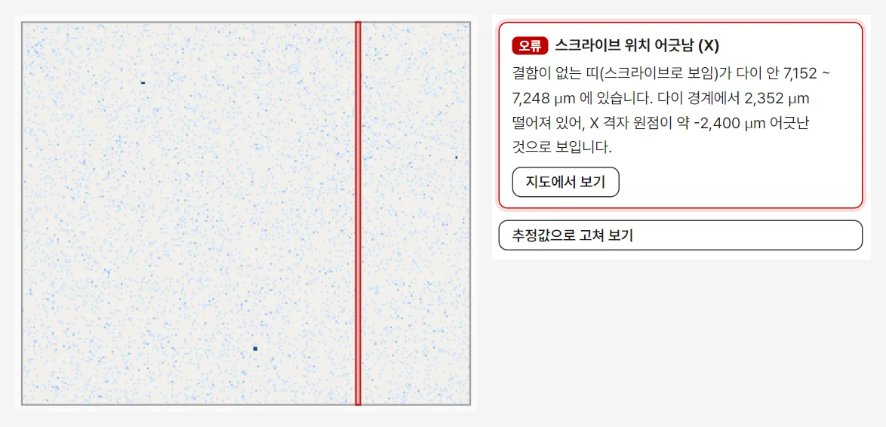

결함 지도가 그럴듯하게 틀릴 때
무엇이 문제인가
Klarf 는 결함 위치를 다이 번호(XINDEX, YINDEX)와 다이 안 상대 좌표(XREL, YREL)로 적습니다. 웨이퍼 위 좌표는 이 값에 DiePitch 와 웨이퍼 중심 위치를 써서 계산합니다. 검사기가 틀린 맵 정의로 이 값을 썼어도 파일 안에서는 앞뒤가 맞습니다. 그래서 뷰어는 오류 없이 지도를 그리고, 결함은 엉뚱한 다이에 붙습니다.
레시피와 맵을 만들 때는 결함을 보기 전에 맵 정의부터 확인했습니다. Klarf 웨이퍼 맵 뷰어는 같은 일을 결함 파일 쪽에서 합니다. 파일을 열 때마다 pitch, 스크라이브(격자 원점), 원점 다이, 웨이퍼 밖 결함, 다이 인덱스 5가지를 결함 배열과 대조합니다. 아래는 그중 pitch 와 스크라이브입니다. 코드는 src/check.js 에 있습니다.
pitch: 결함 위치에서 다이 주기를 찾는다
검사기가 틀린 pitch 로 다이 번호와 상대 좌표를 나눴어도, 같은 pitch 로 다시 합친 웨이퍼 위 좌표(다이 번호 × pitch + 상대 좌표)는 검사기가 잰 위치로 돌아옵니다. 그 위치에는 다이마다 되풀이되는 구조가 남습니다. 다이 안 같은 자리의 반복 결함, 검사하지 않는 스크라이브의 빈 띠입니다. 이 주기는 선언값과 상관없이 실제 다이 주기입니다.
앱은 결함 X 좌표를 pitch/32 폭 칸으로 모으고, 선언 pitch ±5% 안의 후보 주기 201개마다 1~8차 고조파 세기를 평균합니다. 무작위 위치면 세기가 약 1 이고, 반복 구조가 있으면 실제 주기에서 솟습니다. 가장 높은 후보를 포물선으로 다듬은 값이 찾은 주기입니다.
// src/check.js 에서. 규칙 기본값은 숫자로 바꿔 적음
const per = period(ax ? W.y : W.x, n, p, g.R); // 찾은 주기 q, 신호 세기 z (잡음 = 1)
const dev = ((per.q - p) / p) * 100;
const pitchBad = per.z >= 8 && Math.abs(dev) > 1.0; // 신호가 충분할 때만, 1% 넘게 다르면 오류
스크라이브: 결함 없는 띠가 다이 경계에 있는가
검사하지 않는 스크라이브에는 결함이 없습니다. 맵 정의가 맞으면 다이 안 상대 좌표에서 이 빈 띠는 다이 경계(0 = pitch)에 걸쳐야 합니다. 앱은 XREL 을 400칸으로 나눠 평균의 15% 보다 적은 칸이 가장 길게 이어진 구간을 찾습니다. 띠 가장자리가 경계에서 pitch 의 2% 넘게 떨어져 있으면 오류이고, 띠 가운데로 원점이 어긋난 양을 추정합니다.

오검을 막는 장치
- 주기 신호가 8 보다 약하면 판정하지 않고 '참고'로 적습니다. 구조 없는 무작위 위치 8,000개(시드 5개)로 재 보면 세기는 1.4~2.4 이고, 찾은 '주기'는 9,267~10,080 µm 로 아무 데나 떨어집니다. 이 하한이 없으면 그대로 pitch 오류가 됩니다.
- 결함이 2,000개보다 적으면 pitch, 스크라이브는 판정하지 않습니다. 스크라이브는 빈 띠만 봅니다. 짙은 띠는 반복 결함도 만들기 때문입니다. 띠가 pitch 의 20% 보다 넓거나, 그 띠에 기대되는 결함이 30개도 안 되면 우연히 빈 구간일 수 있어 보지 않습니다.
- 원인으로 설명되는 증상은 따로 세지 않습니다. pitch 가 틀리면 스크라이브는 판정하지 않고, 원점 다이와 인덱스를 바로잡은 좌표로 웨이퍼 밖 결함을 셉니다. 오류 하나가 오류 여러 개로 보고되지 않게 하려는 것입니다.
결과
맵 오류를 하나씩 넣은 합성 파일 5개에서 5개를 모두 찾았고, 파일마다 넣은 오류 하나만 보고했습니다. 정상 합성 웨이퍼 24장(예시 4장, 다른 시드 20장)에서 오검은 0건이었습니다. 정상 웨이퍼의 주기 신호는 가장 약한 것이 44, 선언 pitch 와의 차이는 가장 큰 것이 0.03% 로 기준과 거리가 멉니다. 추정값으로 고쳐 본 맵을 다시 검증하면 pitch, 스크라이브, 원점, 인덱스 4종은 오류 0 이고, 웨이퍼 밖 결함은 진짜 결함이라 남습니다. 저장소에서 node --test 로 확인할 수 있습니다. 다만 기준값은 합성 데이터로만 맞췄고, 반복 구조가 약한 실제 파일에서는 다시 맞춰야 할 수 있습니다.
정리
파일 안에서 앞뒤가 맞는 것과 맵 정의가 맞는 것은 다릅니다. 결함 배열은 다이 주기와 스크라이브 위치를 스스로 담고 있어서, 선언된 맵 정의와 따로 대조할 근거가 됩니다. 분포를 해석하기 전에 그 분포를 그린 좌표계부터 확인하고, 판정할 만큼 신호가 없으면 오류 대신 판정하지 않았다고 적습니다.
그림과 수치는 앱의 합성 Klarf 생성기(src/gen.js)로 만든 데이터에서 나온 것이고, 실제 장비나 제품 파일이 아닙니다.